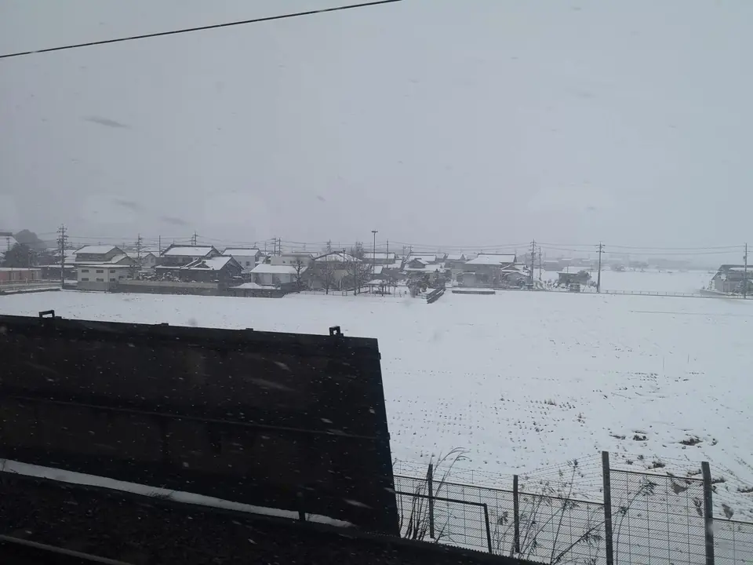
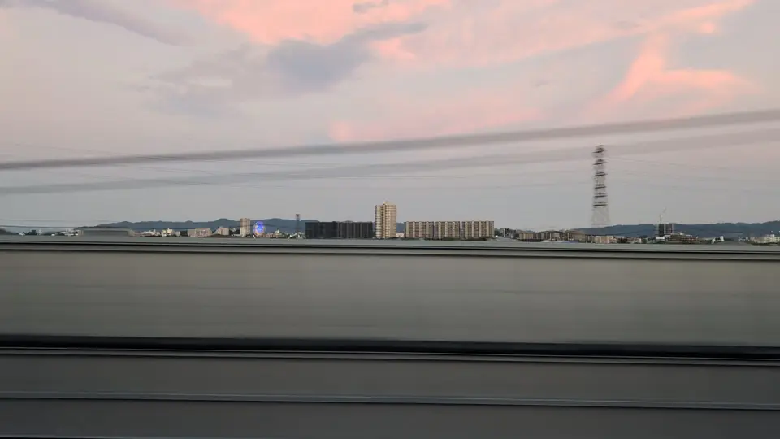

姫路城
姫路駅の前後
FIELD GUIDE
知ると、車窓はもっと面白い。
見慣れた看板の正体も、富士山と工場のつながりも。写真と解説で知ると、次に窓を見る楽しみが増えます。
BROWSE BY THEME
 MOUNT FUJI
富士山はいつ見える
どちら側の席か、東京から何分ごろか。
MOUNT FUJI
富士山はいつ見える
どちら側の席か、東京から何分ごろか。
 CASTLES
新幹線から見える城
天守と城跡を、車窓の写真でめぐる。
CASTLES
新幹線から見える城
天守と城跡を、車窓の写真でめぐる。
 TRACKSIDE SIGNS
727看板コレクション
沿線に何度も現れる、あの看板の正体。
TRACKSIDE SIGNS
727看板コレクション
沿線に何度も現れる、あの看板の正体。
 AFTER DARK
新幹線の夜景
暗くなる区間を、出発時刻から。
AFTER DARK
新幹線の夜景
暗くなる区間を、出発時刻から。
 SUMMER
車窓の花火
沿線7大会を、見える区間と時刻で。
SUMMER
車窓の花火
沿線7大会を、見える区間と時刻で。

WINDOW MOMENTS 一度きりの車窓 虹、雪、雲、雷。その日だけの空に出会う。 LIMITED
ディズニー新幹線
すれ違えるかを、時刻から計算。
LIMITED
ディズニー新幹線
すれ違えるかを、時刻から計算。
 REFLECTIONS
ガラスに映る新幹線
乗っている列車が映る、反射鉄の場所と見どき。
REFLECTIONS
ガラスに映る新幹線
乗っている列車が映る、反射鉄の場所と見どき。

FERRIS WHEELS 車窓の観覧車を集める 街の向こうの、小さな輪を探す。「素通りの街」の車窓写真：れたす「新幹線の車窓から」 · トリミング表示
ALL 58 VIEWS
MORE TO SEE
MORE TO TRY